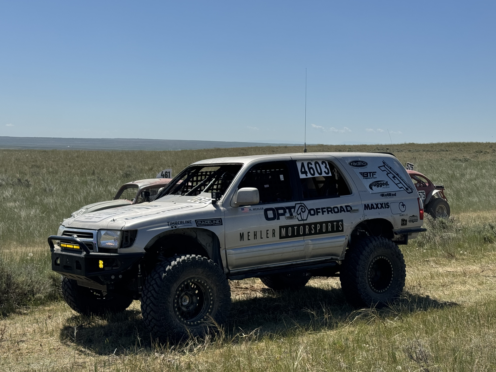

Featured project
Designing and building an Ultra4 race truck
I led a team building a 4600-class truck from a 1999 Toyota 4Runner. The project brought together roll-cage CAD and analysis, fabrication, suspension, vehicle systems, fundraising, and race testing.